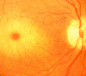

|
Tay-Sachs disease = an autosomal recessive lysosomal enzyme disorder
characterised by cherry red spot in the retina, neurone degeneration and
early death usually before the age of 3.
| 
Cherry-red spot in Tay-Sachs disease. |
Warren Tay came from Yorkshire and studied medicine at London Hospital. He qualified as a physician in 1866 and in surgery in 1869. In 1868 he was appointed assistant surgeon to the Hospital for Skin Disease at Blackfriars, a position he held until 1907. He also held a position at the North-Eastern Hospital for Children, now Queen's Hospital for Children, on Hackney Road. In 1869, the year in which he became a member of the Royal College of Surgeons, he was appointed assistant surgeon and ophthalmologist to London Hospital.
At [Royal] London Ophthalmic Hospital, Moorfields, he met Edward Nettleship, as they were both clinical assistants to the surgeon Jonathan Hutchinson (1828-1913). Hutchinson had a profound influence upon Tay, to the degree that he became a disciple and acquired Hutchinson’s manners, calling himself a "universal specialist", as Hutchinsom was often called.
Their relationship as teacher and student soon developed into friendship. Collaborating for many years, both men contributed important observations in ophthalmology, dermatology and syphilology. As the younger surgeon, however, Tay was overshadowed by his great clinical teacher, at times to such a degree that it looked as if it might have weakened his own initiative and judgement. He was later appointed senior surgeon to the hospital at a time when John Hughlings Jackson (1835-1911) was senior physician, and he had to treat surgically all those complicated brain cases that only Jackson, at that time, could diagnose.
When Sir William Bowman (1816-1892) retired from Moorfields in 1877 Tay was appointed his successor. He was a founding member of the Ophthalmological Society, and in volume one of its transactions he reported his studies from the year 1881 of a child with neurological dysfunction, and described "symmetrical changes in the region of the yellow spot in each eye of an infant". This was the first description of the cherry-red dots in amaurotic familial idiocy, or Tay-Sachs' disease. In 1894, in the fourth edition of the same journal, he gave a complete description of the clinical symptoms of this disorder and reported a new patient from the same family. The disease has been called amaurotic familial idiocy, but this term is no longer commonly used, and the eponymic designation Tay-Sachs disease has been kept for GM2 gangliosidosis type 1, which is now one of the best known of the inherited metabolical disorders.
Warren Tay was a keen walker and an enthusiastic cyclist, riding a tricycle, a familiar figure at all the cycle shows, having all the latest features incorporated on his tricycle. He was especially fond of cycling to a simple cottage along the Brighton Road, where he always spent his holidays. When a friend tried to persuade him to join him on a holiday, Tay always declined: "My hostess would be so disappointed if I did not go as usual to Whitsun".
Tay was a quiet, friendly man, extremely dexterous as a surgeon, and very keen to show the younger men the techniques he had acquired. Because of his great expertise and his willingness to teach others, he attracted a large number of people who wanted to work with him.
Like Hutchinson he suffered from chronic glaucoma. As with the latter, only one eye was seriously involved and sight was preserved in the other eye by using miotics. However, because he was an avid reader of thrillers, he lived the latter part of his life in constant fear of losing his eyesight.
The unassuming Tay remained a bachelor, living in a modest house at Finsbury Square.
In addition to his contributions to ophthalmology, Tay translated one of the volumes of Ferdinand von Hebra’s work Diseases of the Skin for the new Sydenham Society. He continued at Moorfields until retirement age, but unlike most people he became less dogmatic and self-assertive with age, and he was said to be unduly deferent to the opinion of younger and less experienced people. From 1902 he was consulting surgeon and a decade later withdrew from practice to live quietly in the village of Croydon until his death in 1927, aged 84 years.
It was at the Royal London Ophtalmic Hospital, Moorfields, that Tay discovered Tay's choroiditis in 1874-75. This condition consists of tiny yellow to white dots in the choroid around the macula in elderly people. The disease is also known as Hutchinson's disease and represents a manifestation of senile macula degeneration. When Tay was brought in for consultation on a case of “Tay’s choroiditis” he asked his colleague, “Incidentally, why do they call it “Tay’s choroiditis?” Reminded that he had been the first to describe the disease, the retiring – and absentminded Dr. Tay replied, “Oh, so I did, but Mr. Hutchinson gave it a name.”
This is from one of his obituaries: "Tay was one of the hewers of wood and drawers of water in medicine. Such men accumulate the material with which others build. He was a walking dictionary at the London in the 90's. No one knew more about skin and tumours, or syphilis or eyes, and he had seen more outpatients there and at Blackfriars and Moorfields than any living man. He had a prodigious zeal for knowledge, without the desire and perhaps without the power of exploiting it. Tay owed his appointment on the staff to Jonathan Hutchinson, but Hutchinson owed very much to Tay, whose industry was ever at his call."